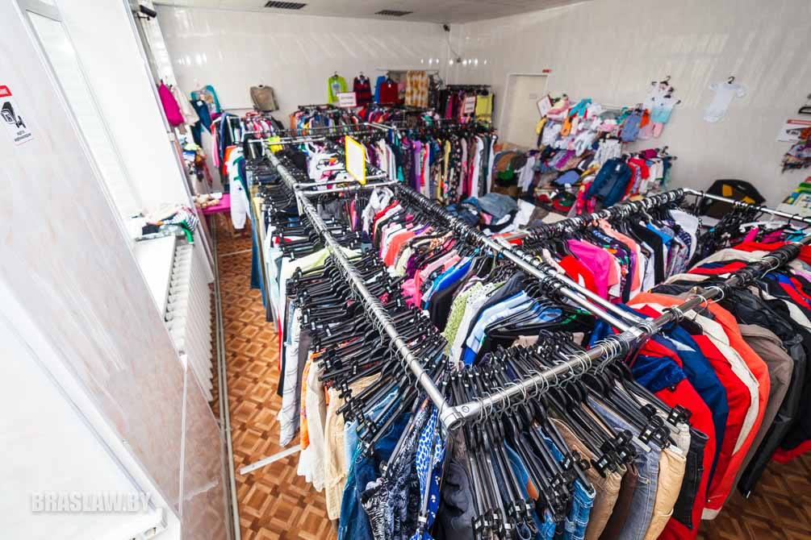
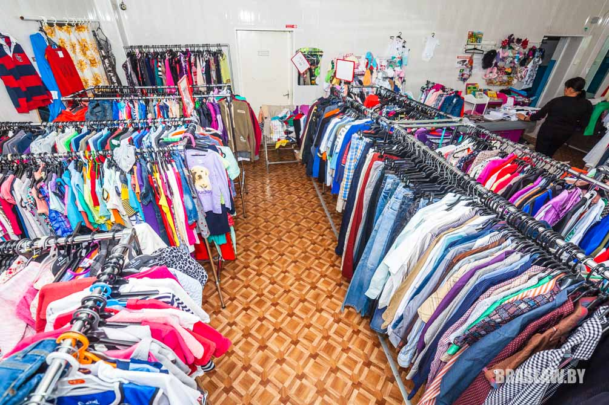

Обзор секонд-хендов в Браславе (карта)
")
Наш сайт подготовил обзор браславских секонд-хендов. В свете июньского заявления председателя концерна "Беллегпром" Татьяны Лугиной, пока неясно, каким образом будут "переформатированы" популярные точки, но пока они существуют.
В Браславе "секондов" осталось немного, но найти интересные вещи по карману удастся каждому.
ДАМСКИЕ ШТУЧКИ
МЕСТО И ГРАФИК РАБОТЫ: рынок; 9.00-14.00; выходной - понедельник.
АССОРТИМЕНТ: женская, мужская и детская одежда - свитера, спортивные костюмы, блузки, джинсы, пиджаки, брюки, рубашки, купальники.
СВЯЗЬ: 33 3060534 (Ирена), 33 3060539 (Светлана)
Раньше в павильончике продавалась только женская одежда, сейчас владелец перепрофилировался - теперь тут можно одеть мужчин и детей. "Дамские штучки" - это модные брендовые вещи категорий "крем" (без видимого износа) и "сток".
УНП391026395
MULTICAM
МЕСТО И ГРАФИК РАБОТЫ: рынок; 9.00-14.00; выходной - понедельник.
АССОРТИМЕНТ: рабочая одежда, армейская одежда, туристическая амуниция.
СВЯЗЬ: (33) 613 02 19
Павильон "Multicam" (раньше "Vintage") специализируется на рабочей и армейской одежде. Отличный выбор для любителей рыбалки, охоты и просто милитари-стиля - всегда найдете, что одеть/обуть. А еще тут много туристической амуниции - рюкзаки, спальники, коврики, дождевики и комбинезоны. Очень много интересных качественных мелочей - ремни, ножи, различные головные уборы, перчатки, полевая посуда, стельки и сумки.
УНП391025572
БУЛАВКА
МЕСТО И ГРАФИК РАБОТЫ: Октября 15 (здание Дома быта) / пн-пт 10.00-18.00, обед 14.00-15.00/ сб-вс 10.00-14.00 / вторник - выходной
АССОРТИМЕНТ: мужская, женская и детская одежда (0+)
СВЯЗЬ: (29) 5133882
"Булавка" работает уже почти 2 года и пользуется среди браславчан популярностью. Наверно потому, что тут можно не только найти качественную одежду, но и заказать ее у продавца. Тут вы найдете много мужских и женских брендовых вещей - джинсы, куртки, рубашки, жилетки, байки, майки, ремни, платья и блузки. Для детей тоже привозят одежду и обувь (с 0 лет), поэтому если собирались одеть ребенка в школу, можете поискать ему что-нибудь здесь. Магазин часто проводит акции, делает скидки постоянным клиентам, а при желании можно подписаться на sms-рассылку, в которой вас оповестят о новом привозе.


УНП391029511
ГАРДЕРОБЧИК
МЕСТО И ГРАФИК РАБОТЫ: рынок; 9.00-14.00; выходной - понедельник.
АССОРТИМЕНТ: мужская, женская и детская одежда
СВЯЗЬ: (29) 2146898
В павильоне "Гардеробчик" большой выбор одежды для всей семьи - джинсы, рубашки, футболки, куртки, блузки, обувь и много чего другого. Тут вы точно найдете что-то для себя или своих родственников.
УНП391022560
ОБУВЬ Б/У
МЕСТО И ГРАФИК РАБОТЫ: рынок; 9.00-14.00; выходной - понедельник, вторник.
АССОРТИМЕНТ: мужская, женская и детская обувь
ОДЕЖДА ИЗ ЕВРОПЫ
МЕСТО И ГРАФИК РАБОТЫ: ул.Октября, 4В
АССОРТИМЕНТ: женская и мужская одежда и обувь